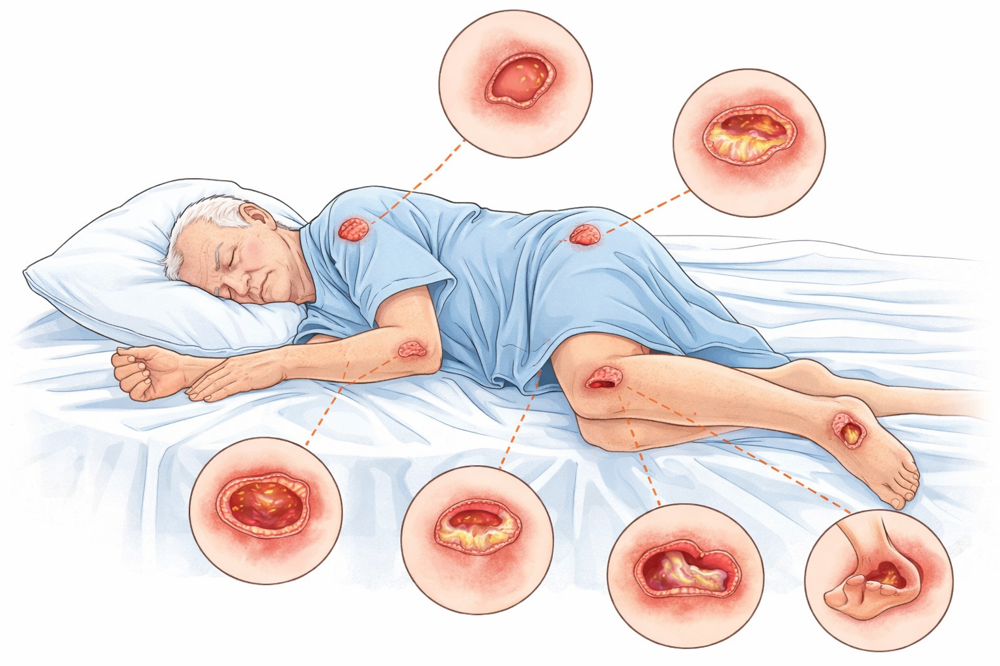

Fatores de Risco
- Imobilidade prolongada
- Desnutrição e desidratação
- Incontinência urinária e fecal
- Idade avançada
- Doenças crônicas (ex.: diabetes, insuficiência vascular)
- Redução da sensibilidade
Conceito
Lesão por pressão é um dano localizado na pele e/ou no tecido subjacente, geralmente sobre uma proeminência óssea, resultante de pressão prolongada ou pressão associada ao cisalhamento.

Classificação
As lesões por pressão são classificadas em estágios conforme profundidade e comprometimento tecidual.
Prevenção
Envolve avaliação de risco, mudança de decúbito, uso de superfícies de suporte e cuidados adequados com a pele.
Perguntas frequentes (FAQ) + Busca
Digite uma palavra (ex.: “troca”, “dor”, “vermelho”, “umidade”) para localizar perguntas e respostas.
troca
vermelho
umidade
dor
1) Pele vermelha já é lesão por pressão?
Pode ser o primeiro sinal. Se a vermelhidão não clareia ao aliviar a pressão e persiste, é alerta importante.
Evite massagear e procure orientação de enfermagem/saúde.
2) De quanto em quanto tempo devo mudar a posição?
Em geral, recomenda-se reposicionamento programado (frequentemente a cada 2 horas),
mas pode variar conforme tolerância, risco e orientação da equipe.
3) O que fazer quando a pele fica úmida por fralda/suor?
Reduzir umidade é essencial: higiene suave, secagem sem fricção e uso de barreira protetora (quando indicada).
Trocar fraldas/roupas sempre que necessário.
4) Quando devo procurar ajuda urgente?
Procure serviço de saúde se houver aumento rápido da ferida, pus/odor forte, febre, dor intensa,
pele muito quente/vermelha ao redor, ou piora do estado geral.
5) Posso escolher curativo sozinho(a) em casa?
A escolha depende de estágio, exsudato, tecido do leito e profundidade. Por segurança,
deve ser orientada por profissional.
6) Quais são os estágios (graus) da lesão por pressão?
Em geral: Estágio 1 (pele íntegra com eritema que não embranquece), Estágio 2 (perda parcial da pele),
Estágio 3 (perda total da pele com exposição de gordura), Estágio 4 (exposição de músculo/tendão/osso).
Há ainda lesão tissular profunda e lesão não classificável.
7) Quais locais do corpo têm mais risco de lesão por pressão?
Principalmente sobre proeminências ósseas: sacro/cóccix, calcâneos, trocânteres (quadril),
maléolos (tornozelo), cotovelos e occipital (parte de trás da cabeça), dependendo da posição.
8) Colchão “caixa de ovo” evita lesão por pressão?
Pode ajudar no conforto e na distribuição de pressão, mas não substitui reposicionamento, inspeção da pele,
controle de umidade e avaliação de risco. Para pacientes de alto risco, podem ser indicadas superfícies de suporte
específicas (ex.: colchão pneumático), conforme protocolo e avaliação profissional.
9) Posso massagear a pele avermelhada para “ativar a circulação”?
Não é recomendado massagear áreas vermelhas sobre proeminências ósseas, pois pode aumentar o dano tecidual.
O mais importante é aliviar pressão, proteger a pele e procurar orientação profissional.
10) Qual creme ajuda quando há risco de maceração (pele “esbranquiçada” e úmida)?
Em muitos casos, usa-se barreira protetora (ex.: produtos com óxido de zinco ou barreiras poliméricas),
mas a escolha depende do quadro e do protocolo do serviço. O essencial é reduzir umidade e evitar fricção.
11) Quais sinais podem indicar infecção na ferida?
Aumento de dor, calor, vermelhidão ao redor, piora do exsudato (pus), odor forte, febre,
aumento do tamanho da lesão ou piora do estado geral. Diante desses sinais, procure avaliação profissional.
12) Como fazer higiene/limpeza da pele e da região em risco?
Preferir higiene suave, com água e sabonete neutro (quando indicado), enxágue e secagem sem esfregar.
Evitar fricção intensa. Para feridas, a conduta de limpeza deve seguir protocolo e orientação profissional.
13) Alimentação influencia na prevenção e cicatrização?
Sim. Estado nutricional adequado (proteínas, calorias, vitaminas/minerais) e hidratação ajudam na integridade da pele
e na cicatrização. Em pacientes de risco, pode ser necessária avaliação nutricional.
14) O que é fricção e cisalhamento e por que pioram a lesão?
Fricção é o atrito na pele (ex.: arrastar no lençol). Cisalhamento ocorre quando a pele “fica” e o corpo desliza,
lesionando tecidos mais profundos. Reduz-se com técnicas corretas de mobilização e suporte.
15) Com que frequência trocar o curativo?
Depende do tipo de cobertura, volume de exsudato, estágio da lesão e protocolo. Trocas muito frequentes podem traumatizar,
e trocas muito espaçadas podem aumentar risco de maceração/infecção. Deve ser definido por profissional.